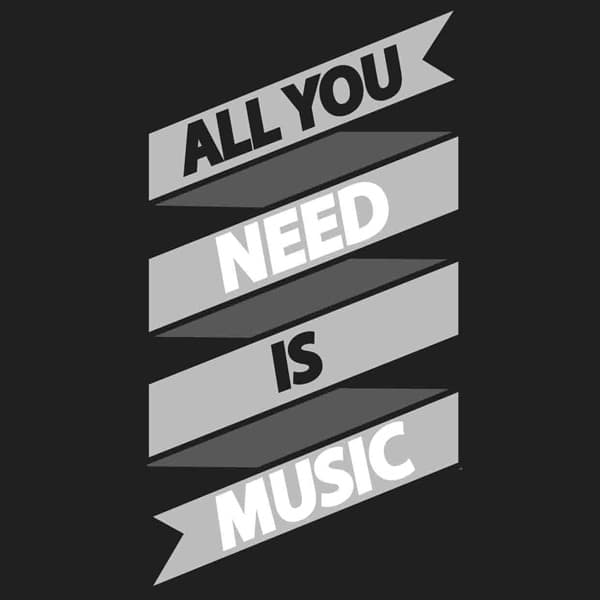
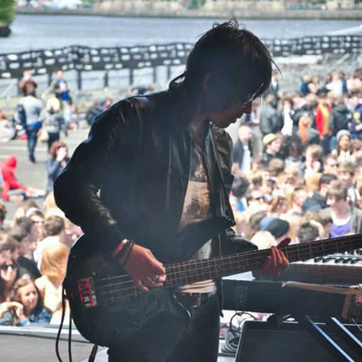

What We Do
Need Music Ltd provides great live music for pubs, restaurants, weddings and corporate.
Specialising in acoustic music, we provide a hassle free, bespoke service, offering great singers and musicians fit for your purpose whether it be a chilled guitar vocalist to sit in the corner to create a relaxed atmosphere, or upbeat cover acts playing songs to get your guests up dancing - we have it all.
Please use our contact page to begin the process of booking a fantastic and exciting live act for your occasion.

Company Profile
Need Music Ltd is a locally-run business catering for the live music demands of North East England.
Founded in 2012 by ex-musician Bruce Tate, the company has grown rapidly, providing a great setvice to clients such as Newcastle United FC, Apartment Group, Newcastle University and North Tyneside Council.
With our huge eclectic roster of musicians and bands, we have something to suit any occasion wether its a wedding, pub gig or restaurant.
We also provide great opportunities for new musicians, enabling them to gain experience and exposure through our Showcase nights. (See Musicians page).

Personal Profile
North East born Bruce Tate founded Need Music Ltd in 2012 after 10 years of recording and touring as a musician.
After having considerable success with the rock band Jetson (BBC Radio 1 Airplay and 2 UK tours), and completing his degree in Business Studies at the University of Central Lancashire, Bruce cofounded the electro band Viva City, who went on to tour the USA 4 times. This included showcase gigs at the SXSW music conferences in Texas and The Viper Rooms in LA, California.
Bruce left the band in March 2012 to pursue a new career as an events co-ordinator and music promoter. With his vast experience of touring, this has helped Need Music Ltd to become a prominent figure on the North East music scene.